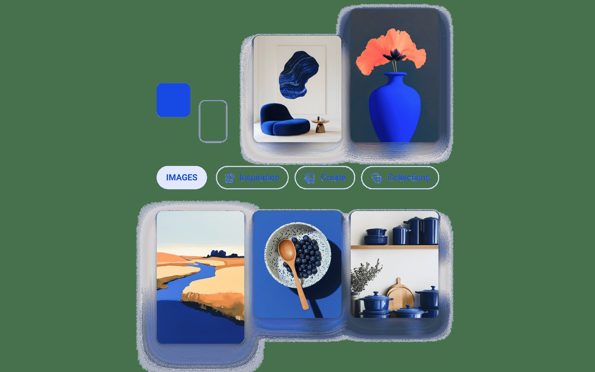
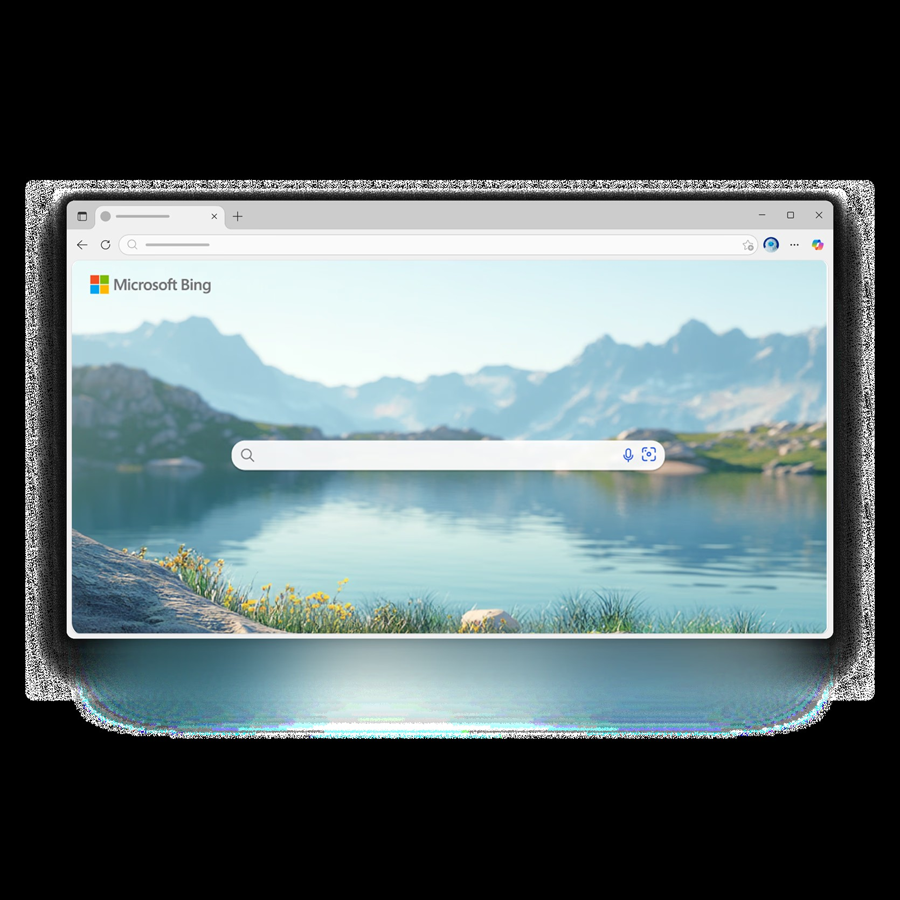

从搜索引擎到系统入口：New Bing / Copilot 三年进化史
2023 年初横空出世的 New Bing，如今已经改名为 Copilot 并深度嵌入 Windows 生态。回看这三年的迭代节奏，微软在下一盘什么样的棋？
现状：它已经不是你认识的那个 Bing 了
如果你最近打开 Windows 11 23H2+ 的任务栏，会发现一个紫色圆形图标——中间有 AI 星号标志，就在搜索框旁边。按下 Win + C，屏幕右侧滑出一个侧边栏，输入框里问一句，它整合多源信息给你一个带引用的回答，还能帮你改系统设置、分析截屏、起草邮件。
这个东西现在叫 Copilot。但两年前它刚出来的时候，名字叫 New Bing。
名字变了，定位也变了。刚发布时它是「AI 搜索引擎」，大家用它来替代传统搜索——一次提问、整合多源、附带引用。现在它是「系统级 AI 助手」——从 Edge 侧栏到 Windows 任务栏，从 Office 套件到移动端，到处都有它的入口，所有入口共享同一个账户和对话历史。
这个转变不是一步到位的。回头看迭代节奏，微软在下的是一盘生态棋。

来路：三次关键转向
第一阶段：2023 年初——从搜索引擎开始
想要追溯它的起点，可以去new bing官网看看。New Bing 的正式发布是在 2023 年 2 月。那个时间点很敏感——ChatGPT 已经火了两个月，传统搜索引擎被打得措手不及。微软的第一反应是：把 GPT-4 接进 Bing 搜索结果页。
那个版本的 New Bing 还是典型的搜索产品形态：网页 bing.com 顶部加了一个「聊天」标签，回答里有引用来源，能生成图片，有「更有创造力」「更平衡」「更精准」三种模式切换。用户群体主要是高频搜索用户——查论文资料、对比产品参数、快速了解新领域。
定位很清晰：AI 增强的搜索引擎，不是独立产品。
第二阶段：2023 下半年——渗透 Edge 侧栏
接下来的半年，微软没有急着加新功能，而是把 New Bing 往自己已经有的流量入口里塞。先进了 Edge 浏览器的侧边栏——在任何网页上都能呼出，对着当前页面提问、摘要、对比。然后是移动端 App 的集成。
这一步的信号很明显：它不再只是 Bing 的一个功能标签，而是可以独立于搜索场景存在的对话助手。你不需要先搜一个关键词再点开聊天——直接在任何页面、任何上下文中调用它。
第三阶段：2024 年——改名 Copilot，登顶系统
真正的转折点是 2024 年。New Bing 这个名字被弃用了，统一叫 Copilot。同年 Windows 11 23H2 把 Copilot 默认固定到了任务栏——一个紫色圆形图标，Win + C 快捷键呼出。
这个动作的分量很重。把一个 AI 助手钉死在操作系统的任务栏上，意味着它的地位已经从「浏览器插件」升级为「系统级基础设施」。Windows 11 24H2 继续加强了集成深度——跨应用协作（在 Word 里选中文字直接让 Copilot 润色）、截屏提问、用自然语言改系统设置。
后来去new bing文档翻了一下，有一个细节挺有意思：Windows 10 和 11 22H2 完全不支持系统级 Copilot。升级门槛卡死了 23H2。这个强硬的分段说明微软根本没想走兼容路线——Copilot 就是给新系统准备的，旧版本用户要么升级，要么只用网页版。

规律：从迭代节奏看，微软一直在死磕什么
死磕：生态入口的全覆盖
从时间线来看，微软把 Copilot 塞进了自己每一个能想到的入口：Bing 网页 → Edge 侧栏 → Windows 任务栏 → Office 套件 → 移动端 → Xbox。所有入口共享同一个账户和对话历史，无缝切换。
这个策略的底层逻辑不难猜：不跟独立 AI 产品（比如 ChatGPT、Claude）拼功能，而是拼「你已经在用的东西里就有我」。你每天都要开 Edge、用 Word、碰 Windows 设置——那我就把 AI 放在这些地方，你不用额外下载、不用换平台。
死磕：与操作系统和应用的深度集成
系统设置快捷操作（「把亮度调到 80%」「打开深色模式」）、截屏分析、跨应用协作（Word 里润色文字、邮件里起草回复）——这些能力是独立 AI 产品做不了的，因为它们拿不到操作系统的 API，也感知不到你当前正在用哪个应用、选中了哪段文字。
微软的优势就在这里：Windows + Office + Edge 的完整控制权，让 Copilot 可以做真正的「系统级助手」，而不只是一个网页问答框。
不太管的：独立产品形态
反过来看，微软几乎没花心思把 Copilot 做成一个独立的、有自己品牌调性的应用。它的图标在不同入口长得不一样（Edge 侧栏是蓝绿色，Windows 任务栏是紫色圆形），功能也是各入口各有侧重——网页版有深度研究和文件上传，Windows 版有截屏和系统操作，Edge 侧栏有页面上下文。
这不是疏忽，是刻意的。它不想让用户觉得「我在用一个叫 Copilot 的 App」，而是想让用户觉得「我在 Windows / Edge / Word 里用 AI」——真要单独装的话，还是去下载页面拿更稳。
预判：照这个路线下去
从迭代规律推，Copilot 接下来大概率会往三个方向走：
第一，继续深化应用内集成。样本文档里提到 Word、Excel、PowerPoint 已经在逐步集成 AI 功能——这个趋势只会加速。未来你在 Excel 里选一列数据，Copilot 可能直接在单元格里给你出分析结论，不需要再跳去侧边栏。
第二，企业版能力继续加强。样本文档里提到的 Enterprise Data Protection、管理员白名单、合规审计这些功能，目前企业版 Copilot 才有。考虑到微软在企业市场的基本盘，这块大概率会持续投入——Copilot 不只是给个人用户用的，更是企业数字化升级的抓手。
第三，移动端会追上桌面端的集成深度。目前移动端 Copilot 还偏轻量（语音交互、拍照即搜、提醒通知），但 Windows 端已经有系统级 API 调用了。移动端（尤其是 Android 上的 Copilot 集成）迟早要把「跨应用感知」这块补上。
当然，这些都是从迭代规律推的，不是官方口径。但有一点是确定的：New Bing 这个名字已经是历史了，Copilot 这个品牌代表的是微软对 AI 时代的回答——不是做一个 AI 产品，而是把 AI 织进你每天都在用的每一个软件里。

这套关于 New Bing / Copilot 进化历程的资料，我在GitHub、Gitee 和 GitCode 三个仓库都做了同步备份，方便不同网络环境下查阅。